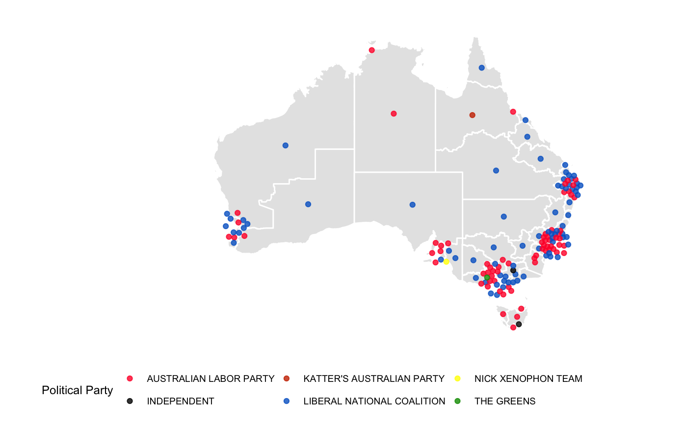

A dataset containing some demographic information for each of the 150 Australian electorates. The data were obtained from the Australian Electoral Commission, and downloaded from http://www.aec.gov.au/Electorates/gis/gis_datadownload.htm. The data is published
nat_data16
A data frame with 150 rows with the following variables:
id: numeric identifier for the polygon
elect_div: Electorate division name
state: abbreviation of the state name
numccds: AEC variable that might be filled with meaning or a description down the road
area_sqkm: combined square kilometers of each electorate
long_c: longitude coordinate of electorate (polygon) centroid
lat_c: latitude coordinate of electorate (polygon) centroid
x: latitude coordinate for plotting a cartogram
y: longitude coordinate for plotting a cartogram
radius: variable used in the construction of cartogram points
#>#> ✔ tibble 2.0.1 ✔ purrr 0.3.1 #> ✔ tidyr 0.8.3 ✔ stringr 1.4.0 #> ✔ readr 1.3.1 ✔ forcats 0.3.0#> Conflicts ─────────────────────────────────────────────────────────────────────── tidyverse_conflicts() ── #> ✖ dplyr::filter() masks stats::filter() #> ✖ purrr::is_null() masks testthat::is_null() #> ✖ dplyr::lag() masks stats::lag() #> ✖ dplyr::matches() masks testthat::matches()library(ggthemes) data(nat_map16) data(fp16) winners <- fp16 %>% filter(Elected == "Y") data(nat_data16) nat_data16$DivisionNm <- toupper(nat_data16$elect_div) nat_data16 <- nat_data16 %>% left_join(winners, by = "DivisionNm") # Plot partycolours = c("#FF0033", "#000000", "#CC3300", "#0066CC", "#FFFF00", "#009900") ggplot(data=nat_map16) + geom_polygon(aes(x=long, y=lat, group=group), fill="grey90", colour="white") + geom_point(data=nat_data16, aes(x=x, y=y, colour=PartyNm), size=1.5, alpha=0.8) + scale_colour_manual(name="Political Party", values=partycolours) + theme_map() + coord_equal() + theme(legend.position="bottom")